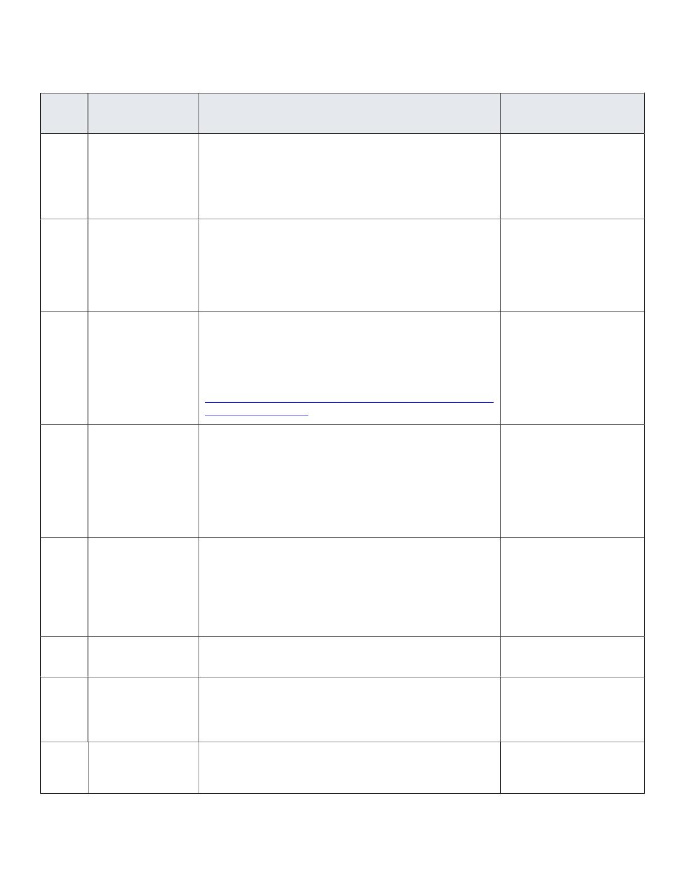

CV Jonathan Chacko 1 | Page
Jonathan Chacko
Grimsby, ON, Canada | +1 (365) 384-2257 | jonathanchacko1805@gmail.com | linkedin.com/in/jcp-tech/ | github.com/jcp99gamers/
PROFILE
Bachelor of Computer Application Graduate with 2 Years of Working Experience
High level of research, technical and problem-solving skills.
Detail-oriented and able to learn new concepts quickly.
Strong adaptability and exceptional interpersonal skills.
Adept at working effectively unsupervised and quickly mastering new skills.
Strong in Automation and Data Science.
SKILLS
Programming Languages: Python, Java, C++
Database Systems: MySQL, SQLite, Firebase Firestore/Realtime Database
Cloud: Google Cloud Services
Testing Frameworks & Tools: Selenium, Beautiful Soup, J-Soup
GUI & Web Development Frameworks: Django, Python Tkinter, Java Swing, Android Development with Java
Operating Systems: Windows, Linux
Web Hosting Servers/Services: cPanel, Firebase Hosting
IDE’s: Visual Studio Code, IntelliJ, Eclipse, Android Studio
Others: GIT, Raspberry Pi, Windows Subsystem for Linux (WSL), Putty, Power Automate, GitHub
Continued Learning: Power BI, Postman, AWS, Video Editing, KNIME (Note- Fields which I have Knowledge but no Practical
opportunity Yet.)
PROFESSIONAL EXPERIENCE
Maritime Support Solutions June 2023 – Till date
Software Developer – Automation (Currently based in Canada working remotely)
Maritime Support Solutions is an ISO 27001 certified back-office services provider focused on the Shipping Liner Agencies in the
middle east. The task assigned was to create a system that would streamline the working processes and eliminate errors during
these processes. My reporting line was directly to the Director of Technical Solutions since he headed the project. The system can be
summarized as below:
Project: MSS Automation
The Modular System created to Automate the Dataflow for Liner/Liner Agents in the Shipping Industry for their Imports,
Inventory, Exports & Transshipment of Containers.
The Software Includes Multiple Tools & Checks which Optimizes the Time to Process Data and Minimize Human Input/Error.
It Has the Capability to take data from Any Format PDF, Excel, CSV, and More and provide the Users the data to finish all the
processes and retrieve reports in the pr-defined formats.
Additionally, it comes with the possibility to receive or send data through APIs to third party systems. The implemented
ones include Power BI for MIS purposes.
Project Responsibilities:
Understanding Variations of the Data for Different Purposes & from Different Sources or Format’s
Structure the Database Tables to Include all Possible Columns used to create any report.
Create the Tools to Process the Data into a Centralized Database & Do the Necessary Check’s on Data to Reduce Error
Create the Tools to Convert the Data into the Required Reports with all Processing and Calculations Done
Send the Data to Power BI Designed for Client
The Location of Kuwait was Used as the Template. Currently adding other Locations requires understanding the Variations
in the Data & Make add-on Systems to Accommodate and Optimize the Data Flow.
CV Jonathan Chacko 2 | Page
Environment, Tools, Standards, Protocols, Frameworks and Technologies:
Python, Django, MySQL, cPanel, HTML, CSS, JS, JSON,
Firebase, Selenium, Google Vision & Various Other Python Libraries.
Additional Roles & Responsibilities:
Assumed the position of Global IT for the organization & its partner companies.
Handled multiple roles with responsibilities including software design, software development, planning and,
implementation.
Understand the organizational structure & IT infrastructure and create the documents necessary for the company to obtain
ISO 27001 Certificate.
Communication with vendors for procurement & setup of IT hardware & software's necessary for the company
Managing all partner companies Email ID’s using the portal of Microsoft Admin Domain.
Rogersoft, Kochi, India January 2023 – August 2023
Professional IT Trainer
Roles and responsibilities:
Introduce students to the subject and guide them through the syllabus.
From the start personalize the course content for the students and help them understand it.
Recommend and guide them through creation of unique projects which they could use in their own lives but also
showcases that they are able to utilize the course contents they learnt.
Subjects: Class-Notes.git
Python
Django
Data Science
SQL
Statistics
Environment, Tools, Standards, Protocols, Frameworks and Technologies: Varies as per Each Student and their Course Selected.
Viral Fission, Pune, India April 2022 – June 2022
Campus Coordinator
Roles and responsibilities:
Organized & Managed Gaming Events with the College and the VF Partner GGN (Good Game Nation)
Bohanee, Pune, India January 2022 – July 2023
Mobile Application Developer
Goal of Startup:
Our startup was born out of a desire to help small shopkeepers in India who lacked access to expensive POS systems. We
developed a mobile app providing a cheap and accessible inventory management solution, including barcode scanning and
automated item identification. While the app itself is free, we leverage the collected data to become a wholesaler. By
analyzing trends within this data, we gain valuable insights to better serve these shopkeepers.
Environment, Tools, Standards, Protocols, Frameworks and Technologies: Android Studio, Java, XML, J-Soup, Selenium

CV Jonathan Chacko 3 | Page
ACADAMIC & ADDITIONAL PROJECTS DONE
# Project Title Project Description
Tools / Software used for
development
1.
Auction & Bidding
System
It was a Project where with Python I Displayed the Capabilities
of using Firebase Firestore as a Database.
This was Done to Show CRUD in Python with Firebase but If
Implemented This could be Used as an Easy-to-Use Bidding
System which can be Accessed anywhere.
Python, Firebase Firestore
2.
Author P.C.
It Started as a Web Scrapper which was Supposed to Scrape
the Data of a Particular Author who Writes Articles then it
Developed into Testing out GitHub Action’s to Create an
Automated Notification System Which Notifies the User if the
Autor has Posted any More Articles Online & Also Compiles
Summary of all Articles in a README.md
Python, beautifulsoup4,
GitHub Actions, YML
3.
Firebase CV
Hosting
Used Firebase Hosting to Show how easy it is to Host Static
Websites Online & Published the Steps on Medium.
Blog Link =
https://medium.com/@mahimabiswas002/hosting-your-cv-on-
firebase-91dff72310e8
HTML, CSS, Firebase Hosting
4.
NAS Server
a. TrueNAS – Initially Tried to Create a NAS Server as a
Project for the University in Network Class using my
ACER LAPTOP to hold the OS.
b. OMV NAS – Realized that TrueNAS wasn’t Practical
daily because I required to Use my Personal Laptop so
instead, I used Open Media Vault NAS on my
Raspberry PI.
Linux
5.
Raspberry PI
Projects
Home Automation System
- Philips WiZ Lights Auto Control System
- Security Camera repurposed to Number Plate
Recognition Garage Opener
- Local Chat Room Server
TP-Link Tapo Camera, Philips
Wiz Bulb, Raspberry PI 4b,
Python
6.
Android App
Money Manager
Created a Mobile Application which Allowed Users to Calculate
their Monthly Expenses and Split it with Friends.
HTML, CSS, JS, Firebase,
Android Studio, Java, XML
7.
Medical Billing
System
Created a Medical Inventory Management and Billing System
for Users to Use Including a Barcode Scanner which the User
can Utilize to Scan the Items QR Code and Do the Billing More
Efficiently.
Java, XML, SQLite, Android
Studio
8.
Power Automate
Project
To Test Out the Capabilities of Power Automate I compiled a
Simple System which Prompts User to Select a File and
Depending on File Extension it Decides on How to Run the File.
Power Automate

CV Jonathan Chacko 4 | Page
9.
Android Mini
Projects
Calculator, Login System Java, XML, SQLite, Android
Studio
10.
Java Swing
Projects
Notepad, Tic-Tac-Toe Game, Currency Convertor, Metric
Convertor
Java, Java Swing
EDUCATION & CERTIFICATIONS
Bachelor of Computer Applications (BCA): Symbiosis, Pune, India (2023)